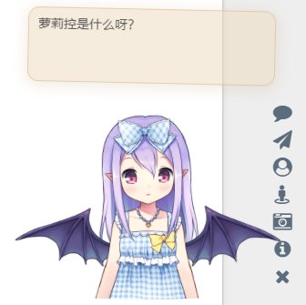
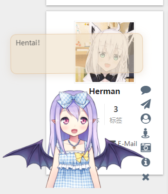
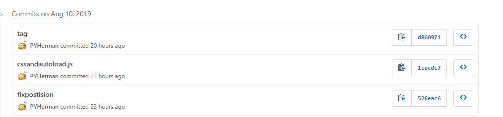
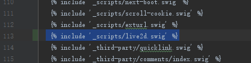

忙活了几个钟头，终于把这吉祥物给安上了，把心路历程写一下。

先放上live2d组件的github原地址。
最简单的方法，可以直接在 themes/next(your themes' name)/layout/_layout.swig 中加入这三行代码
1 | <script src="https://cdn.jsdelivr.net/npm/jquery/dist/jquery.min.js"></script> |
你的博客里就会自动出现默认样式的live2d人物啦。

如图所示，默认样式固定在左边，可能会遮挡内容
不过不能修改肯定是不行的，比如大小，位置还有台词等。对于hexo有两种自定义方法：
- 推荐方法 fork原作者project，然后自己修改属性，再调用jsdelivr上的cdn来部署
- github上选择download zip下载源文件，解压到博客的./source/文件夹下，通过绝对路径部署
两种方法没什么区别，要改的东西都一样，既live2d-widget/autoload.js的第一行中的live2d_path的值，该值代表了博客部署后，live2d-widget文件夹的绝对路径。
1 | //注意：live2d_path参数应使用绝对路径 |
一开始我感觉导入本地肯定是修改起来更方便的，于是按部就班地储存文件，修改绝对路径，git push，但是没有生效。。。
在一番搜索和瞎鸡儿修改之后，我放弃了。
于是我开始着手另一种方法，先fork项目，再pull下来在本地修改后再传上去（组件的css属性在waifu.css里修改），一番鼓捣后再hexo s -g ，又发现live2d的样式没有变化。
我跑到对应的jsdelivr界面一看 （地址：https://cdn.jsdelivr.net/gh/username/live2d-widget/ username为你的用户名）发现里面只储存了之前的版本的仓库，它是根据仓库的tag版本自动更新的。
于是在github仓库里找到你最新修改提交的commit编号

在命令行里敲1
2git flag v0.6.0 1cecdc7
git push origin v0.6.0
这样这个tag就上传到了github,等待一小会，jsdelivr中对应界面就会更新，然后将_layout.swig中对应的引入cdn的代码中的地址加上@0.6.01
<script src="https://cdn.jsdelivr.net/gh/pyherman/live2d-widget@0.6.0/autoload.js"></script>
这样就大功告成拉，这之后自己修改live2d组件也方便了许多。
顺带一提，可以将live2d组件单独创建一个live2d.swig文件，1
2
3{% if theme.live2d %}
<script src="https://cdn.jsdelivr.net/gh/pyherman/live2d-widget@0.6.0/autoload.js"></script>
{% endif %}
然后在_layout.swig中加入

在博客中加入这行代码居然会报错hhh，以后要注意了
最后在对应的themes文件夹下的配置文件_config.yml中加入属性live2d: true。这样live2d也写成一个组件，提高了代码复用性，显示隐藏也方便了许多~